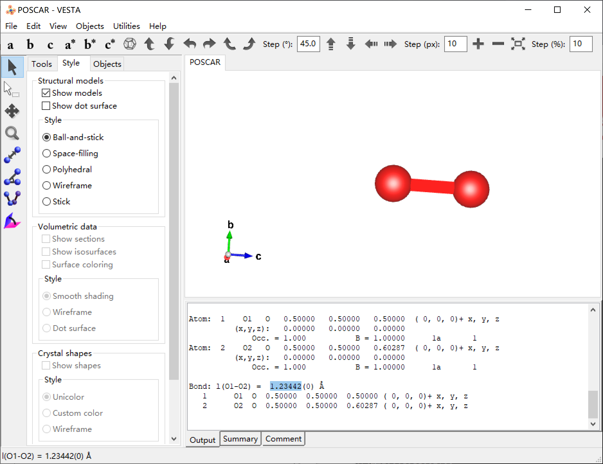

结构优化、自洽、非自洽 ¶
结构优化计算是指将输入结构进行弛豫，得到一个稳定的结构（通常以能量变化或力作为收敛标准）。
静态自洽计算，顾名思义就是不对原子或离子的坐标进行改变，只是调整体系电子的运动，以达到该结构的最低能量。
非自洽计算，是在自洽基础上改变 k 点等等参数，根据不同需要选取能量或势函数或电子密度作为初始值，进行迭代计算，可用于求解 DOS，能带或者光学等其他性质。
本页对 \(O_2\) 进行结构优化、静电自洽、非静电自洽。
目录结构 ¶
.
├── 1-geo
│ ├── CONTCAR
│ ├── INCAR
│ ├── KPOINTS
│ ├── POSCAR
│ ├── POTCAR
│ └── vasp.pbs
├── 2-scf
│ ├── CHGCAR
│ ├── EIGENVAL
│ ├── INCAR
│ ├── KPOINTS -> ../1-geo/KPOINTS
│ ├── POSCAR -> ../1-geo/CONTCAR
│ ├── POTCAR -> ../1-geo/POTCAR
│ └── vasp.pbs
└── 3-nscf
├── CHGCAR 复制自../2-scf/CHGCAR
├── INCAR
├── KPOINTS
├── POSCAR -> ../2-scf/POSCAR
├── POTCAR -> ../2-scf/POTCAR
└── vasp.pbs
只列出了输入文件和必要的输出文件。
步骤 ¶
结构优化 ¶
在
1-geo
文件夹中对结构进行结构优化。
Global Parameters
ISTART = 0 (Read existing wavefunction; if there)
ISPIN = 2 (Spin polarised DFT)
ICHARG = 2 (Non-self-consistent: GGA/LDA band structures)
LREAL = .FALSE. (Projection operators: automatic)
ENCUT = 400 (Cut-off energy for plane wave basis set, in eV)
PREC = Normal (Precision level)
LWAVE = .FALSE. (Write WAVECAR or not)
LCHARG = .FALSE. (Write CHGCAR or not)
ADDGRID= .TRUE. (Increase grid; helps GGA convergence)
NPAR = 4 (Max is no. nodes; don't set for hybrids)
Electronic Relaxation
ISMEAR = 0 (Gaussian smearing; metals:1)
SIGMA = 0.05 (Smearing value in eV; metals:0.2)
NELM = 60 (Max electronic SCF steps)
NELMIN = 4 (Min electronic SCF steps)
EDIFF = 1E-06 (SCF energy convergence; in eV)
Ionic Relaxation
NSW = 30 (Max electronic SCF steps)
IBRION = 2 (Algorithm: 0-MD; 1-Quasi-New; 2-CG)
ISIF = 2 (Stress/relaxation: 2-Ions, 3-Shape/Ions/V, 4-Shape/Ions)
EDIFFG = -2E-02 (Ionic convergence; eV/AA)
KPOINTS 和 POTCAR 使用
vaspkit-103
生成
提交计算，在
stdout
里看到
reached required accuracy - stopping structural energy minimisation
即为收敛。
得到的
CONTCAR
（优化后的结构）见下，CONTCAR 写入的默认是分数坐标，将其转换为笛卡尔坐标后见 CONTCAR_Caresian。
O2
1.00000000000000
10.0000000000000000 0.0000000000000000 0.0000000000000000
0.0000000000000000 10.0000000000000000 0.0000000000000000
0.0000000000000000 0.0000000000000000 12.0000000000000000
O
2
Selective dynamics
Direct
0.5000000000000000 0.5000000000000000 0.5000000000000000 F F F
0.5000000000000000 0.5000000000000000 0.6028684362988320 F F T
0.00000000E+00 0.00000000E+00 0.00000000E+00
0.00000000E+00 0.00000000E+00 0.00000000E+00
O2
1.000
10.0000000000000000 0.0000000000000000 0.0000000000000000
0.0000000000000000 10.0000000000000000 0.0000000000000000
0.0000000000000000 0.0000000000000000 12.0000000000000000
O
2
Selective Dynamics
Cartesian
5.0000000000000000 5.0000000000000000 6.0000000000000000 F F F
5.0000000000000000 5.0000000000000000 7.2344212355859838 F F T
计算得到的键长为 \(\text{1.234421235585984 \AA}\) ，与实验值 \(\text{1.2075\AA}\) 相近（误差 2.2%）。
也可以将 CONTCAR 使用 VESTA 查看，键长为 1.23442 \(\text{\AA}\) 。

自洽计算 ¶
在
2-scf
文件夹中对已优化的结构进行静电自洽。
- 将结构优化得到的结果复制过来（CONTCAR 变为 POSCAR、改 INCAR，POTCAR 和 KPOINTS 不改）
- 修改 INCAR 使其符合自洽计算的要求
- 提交作业
[zjb@op 2-scf]$ ln -s ../1-geo/CONTCAR POSCAR
[zjb@op 2-scf]$ ln -s ../1-geo/POTCAR .
[zjb@op 2-scf]$ ln -s ../1-geo/KPOINTS .
[zjb@op 2-scf]$ cp ../1-geo/INCAR .
[zjb@op 2-scf]$ cp ../1-geo/vasp.pbs .
# 修改INCAR
NSW = 0
IBRION = -1
LWAVE = .TRUE.
LCHARG = .TRUE.
提交计算。
[zjb@op 2-scf]$ cat EIGENVAL
2 2 1 2
0.6000000E+03 0.1000000E-08 0.1000000E-08 0.1200000E-08 0.5000000E-15
1.000000000000000E-004
CAR
unknown system
12 1 12
0.0000000E+00 0.0000000E+00 0.0000000E+00 0.1000000E+01
1 -32.479163 -31.253398 1.000000 1.000000
2 -20.620813 -18.824373 1.000000 1.000000
3 -13.381535 -12.454501 1.000000 1.000000
4 -13.228318 -11.385151 1.000000 1.000000
5 -13.228318 -11.385151 1.000000 1.000000
6 -6.915025 -4.642110 1.000000 0.000000
7 -6.915024 -4.642110 1.000000 0.000000
8 -0.315761 -0.201192 0.000000 0.000000
9 0.533238 0.741194 0.000000 0.000000
10 0.791404 0.862512 0.000000 0.000000
11 1.120056 1.246772 0.000000 0.000000
12 1.120056 1.246772 0.000000 0.000000
非自洽计算 ¶
在
3-nscf
文件夹中进行非自洽计算。
- 将自洽计算的 POSCAR（CONTCAR 也行，因为 scf 不改变结构）、POTCAR、INCAR、KPOINTS、CHGCAR 复制过来。
- 修改 INCAR 和 KPOINTS。
- 提交计算。
[zjb@op 3-nscf]$ ln -s ../2-scf/POSCAR ../2-scf/POTCAR .
[zjb@op 3-nscf]$ cp ../2-scf/INCAR ../2-scf/KPOINTS ../2-scf/CHGCAR ../2-scf/vasp.pbs .
INCAR 中修改以下
改：
ISTART = 1 (Read existing wavefunction; if there)
ICHARG = 11 (Non-self-consistent: GGA/LDA band structures)
ISMEAR = 0 (Gaussian smearing; metals:1)
SIGMA = 0.05 (Smearing value in eV; metals:0.2)
删：
# EDIFFG = -2E-02 (Ionic convergence; eV/AA)
增：
DOS
NEDOS = 6000
LORBIT = 11
KPOINTS 重新生成，但是这次我没动 K 点（主要是不知道应该改成啥）。
提交计算。